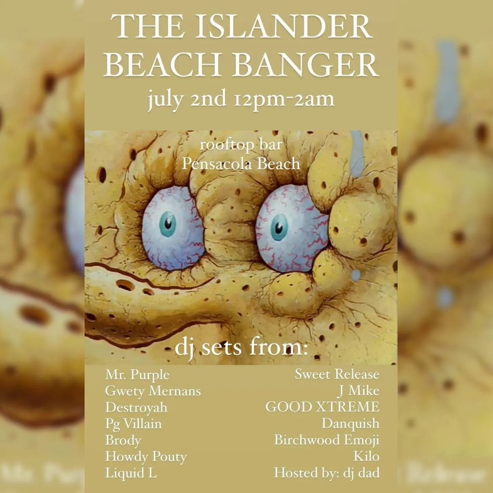

SAT JUL 2from the archive
Mr. Purple, Sweet Release, Gwety Mernans, J.mike, Destroyah, Good Xtreme, Pg Villain, Danquish, Dj Brody, Birchwood Emoji, Howdy Pouty, Kilo, Liquid L, Dj Dad
mr. purplesweet releasegwety mernansj.mikedestroyahgood xtremepg villaindanquishdj brodybirchwood emojihowdy poutykiloliquid ldj dad
show 12pm